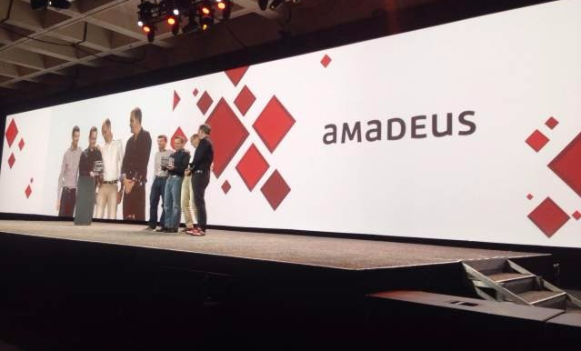

时间列表
搜索新闻关键词
-
 2016 红帽峰会盛大召开 全面聚焦云计算和实践应用2016红帽峰会（Red Hat Summit 2016）于6月27-30日在美国旧金山Moscone展览中心举行。这是红帽公司每年一度的技术大会，同时也是开源界最具影响力的盛会，因为集萃了本年度最热点的开源技术、最新发布的产品及最佳行业实践而广受瞩目。来自全球的红帽开源技术生态企业、客户、开发者及行业人士数千......【了解详情】
2016 红帽峰会盛大召开 全面聚焦云计算和实践应用2016红帽峰会（Red Hat Summit 2016）于6月27-30日在美国旧金山Moscone展览中心举行。这是红帽公司每年一度的技术大会，同时也是开源界最具影响力的盛会，因为集萃了本年度最热点的开源技术、最新发布的产品及最佳行业实践而广受瞩目。来自全球的红帽开源技术生态企业、客户、开发者及行业人士数千......【了解详情】 -
红帽总裁兼CEO Jim Whitehurst 主场定调 点燃“参与的力量”在26日上午的Keynote演讲中，红帽公司总裁兼CEO Jim Whitehurst作为首场Keynote演讲者，发表了题为“参与的力量”主题演讲，为本次大会定下了主旨基调......【了解详情】
-
 红帽发布系列重磅新品 核心关键词“容器”Paul Cormier首先论述了他对容器技术发展四阶段的看法，他认为，容器技术正在进入快速的发展阶段，经过采用、肯定、扩大、变革四个阶段，容器将得到了越来越多企业的认可......【了解详情】
红帽发布系列重磅新品 核心关键词“容器”Paul Cormier首先论述了他对容器技术发展四阶段的看法，他认为，容器技术正在进入快速的发展阶段，经过采用、肯定、扩大、变革四个阶段，容器将得到了越来越多企业的认可......【了解详情】 -
 JBoss EAP 7发布Red Hat企业应用平台JBoss EAP 7的隆重发布。JBoss EAP 7是一个兼容Java EE 7的开源应用服务器平台，发布会上，Paul Comier还同时介绍了JBoss核心业务集部件JBoss CSC，该部件为客户提供了一系列通用的基本应用功能。当前业务快速发展的时代...【了解详情】
JBoss EAP 7发布Red Hat企业应用平台JBoss EAP 7的隆重发布。JBoss EAP 7是一个兼容Java EE 7的开源应用服务器平台，发布会上，Paul Comier还同时介绍了JBoss核心业务集部件JBoss CSC，该部件为客户提供了一系列通用的基本应用功能。当前业务快速发展的时代...【了解详情】 -
更广泛的企业容器平台Red Hat OpenShift红帽发布了基于OpenShift技术的更多容器产品：支持本地开发和提升效率的Red Hat OpenShift Container Local，包括其中的 Red Hat Container Developer Kit；能扩充Linux容器采用......【了解详情】
-
Red Hat Enterprise Linux Atomic Host，带来安全性更高的容器红帽推出了最新版的红帽容器操作系统Red Hat Enterprise Linux Atomic Host，通过一个简化的接口支持集成更多的安全扫描产品.......【了解详情】
-
开源世界 共建生态——与合作伙伴、客户共建最佳实践此次大会上，无论红帽高层，还是每场演讲设置，都可以看出红帽对重要合作伙伴与客户的极其重视。Keynote主要演讲环节中，来自Intel、Dell、SAP、Cisco、微软、埃森哲等重要的合作伙伴技术或业务高层均发表了独立演讲......【了解详情】
-
Mitaka：OpenStack迄今为止最成熟作品面世美国时间4月7日，OpenStack社区发布了OpenStack的第13个版本——Mitaka，新版本聚焦于可管理性、可扩展性和终端用户体验。目前OpenStack在云构建领域已经成为.......【了解详情】